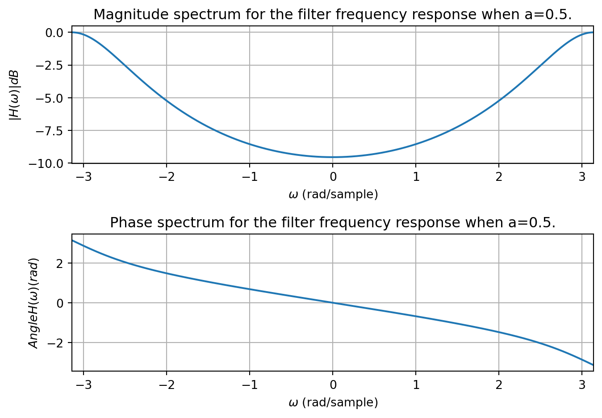
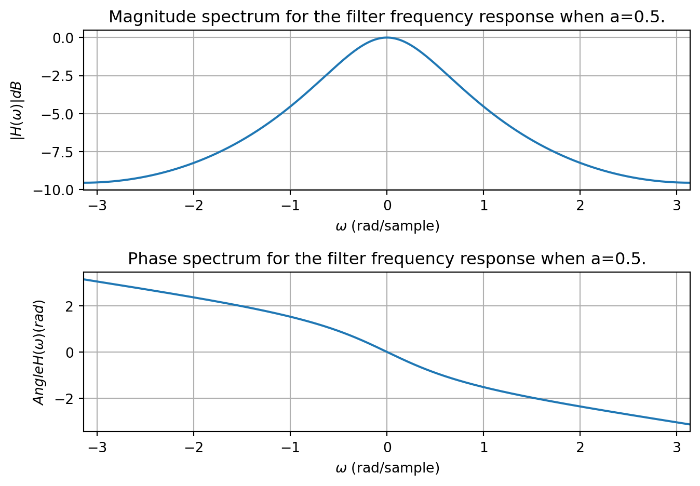
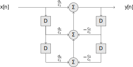
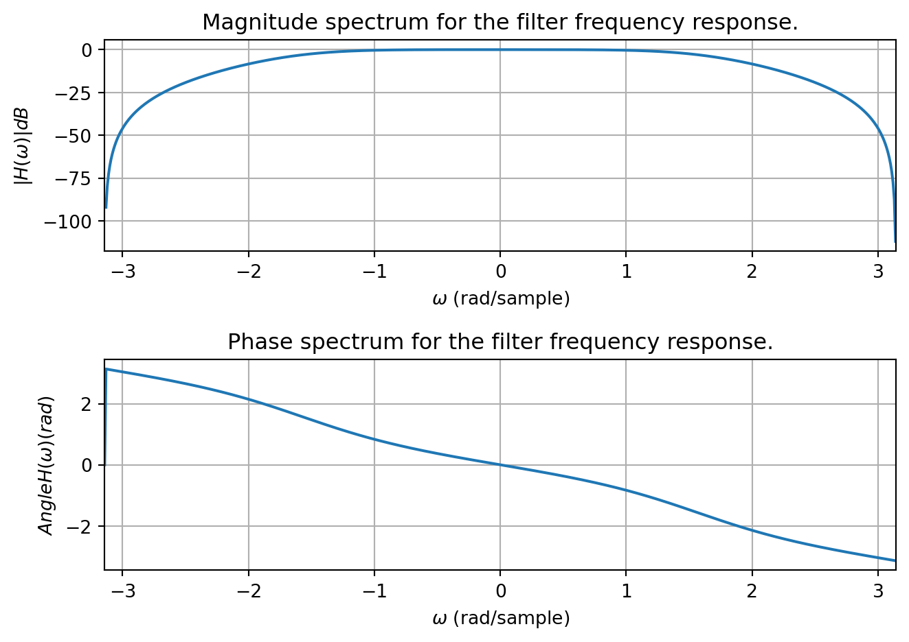

21 Frequency Selective Filters in DT
Recall the response of stable DT LTI systemsi to periodic inputs. Given a stable LTI system with frequency response \(H\left(e^{j\omega}\right)\) the input-output relationship is
\[ x[n] = \sum\limits_{k = N_0}^{N_0 + N-1} a_k e^{jk\omega_0n} \longrightarrow y[n] = \sum\limits_{k = N_0}^{N_0 + N-1} a_k H\left(e^{jk\omega_0}\right) e^{jk\omega_0n} \]
Note the output is equivalent to a signal with Fourier series coefficients \(b_k = a_k H\left(e^{jk\omega_0}\right)\). That is the Fourier coefficients are scaled by the frequency response at the harmonic frequency \(k\omega_0\).
Similarly for aperiodic signals, given a stable LTI system with frequency response \(H\left(e^{j\omega}\right)\) the input-output relationship is \[ x[n] = \frac{1}{2\pi} \int_{2\pi} X\left(e^{j\omega}\right) e^{j\omega n} \; d\omega \longrightarrow y[n] = \frac{1}{2\pi} \int_{2\pi} X\left(e^{j\omega}\right)H\left(e^{j\omega}\right) e^{j\omega n} \; d\omega \] Note the output is equivalent to a signal with DT Fourier Transform \(Y\left(e^{j\omega}\right) = X\left(e^{j\omega}\right) H\left(e^{j\omega}\right)\). That is the Fourier transform at each continuous frequency \(\omega\) is scaled by the frequency response at that frequency.
As in CT, we can design the frequency response to modify the values of \(a_k\) or \(X\left(e^{j\omega}\right)\) selectively, passing them unmodified, increasing (amplifying) them, or decreasing (attenuating) them. Such systems are called DT filters (or more colloquially digital filters). As in CT there are 4 basic types:
- Low-pass Filters attenuate high frequencies while passing through lower frequencies. They are often used to reduce the effects of high-frequency noise in a signal.
- High-pass Filters attenuate lower frequencies while passing through higher frequencies. They are used, for example, to select high-frequency audio components in high-end audio systems.
- Bandpass Filters attenuate frequencies outside a band of frequencies. They can be viewed as a combination of a high-pass and low-pass filter. They are commonly used to select a range of frequencies for further processing and are central to many communication technologies.
- Notch, Bandstop, or Stopband Filters attenuate frequencies inside an often narrow band of frequencies. Common applications are the removal of one or more corrupting signals mixed into another signal.
While the design of such filters is outside the scope of this course, you are now equipped to understand and apply them based on your knowledge of the Fourier methods covered over the past several weeks. This is similar to CT filtering, with the important exception that the frequency domain is periodic in \(2\pi\) for DT systems, so the filter frequency responses are periodic as well, with all the work being done in a range of frequencies from \((0,2\pi)\) or equivalently from \((-\pi,\pi)\).
Digital filters have a number of advantages over CT filters and are widely used now in place of CT filters in audio, communication, and control applications. Audio (and video) in particular is now almost exclusively processed, stored, and transmitted digitally, converting to CT only at the point of an amplifier and speaker.
21.1 Ideal DT Filters
The above filter types each have an ideal form.
Low-pass filters remove frequency content above a threshold, \(\omega_c \in [0,\pi]\), called the . They have an ideal frequency response ,for any integer multiple \(k\), given by: \[ H\left(e^{j\omega}\right) = \left\{ \begin{array}{lc} 1 & 2\pi k -\omega_c < \omega < 2\pi k + \omega_c\\ 0 & \text{else} \end{array} \right. \] with magnitude and phase plot
As in CT filters, the range of frequencies \(-\omega_c \leq \omega \leq \omega_c\) are called the pass-band. The range of frequencies outside the pass-band are called the stop-band.
High-pass filters remove frequency content below the cutoff frequency \(\omega_c\in [0,\pi]\). They have an ideal frequency response \[ H\left(e^{j\omega}\right) = \left\{ \begin{array}{lc} 0 & 2\pi k -\omega_c < \omega < 2\pi k + \omega_c \\ 1 & \text{else} \end{array} \right. \] with magnitude and phase plot

Bandpass filters remove frequency content outside a band of frequencies called the pass-band. They have an ideal frequency response \[ H\left(e^{j\omega}\right) = \left\{ \begin{array}{lc} 1 & 2\pi k -\omega_0 - \frac{B}{2} < \omega < 2\pi k -\omega_0+\frac{B}{2}\\ 1 & 2\pi k + \omega_0 -\frac{B}{2} < \omega < 2\pi k + \omega_0+\frac{B}{2}\\ 0 & \text{else} \end{array} \right. \] where \(\omega_0\in [0,\pi]\) is the and \(B < \pi - \omega_0\) is the . The magnitude and phase plot looks like
Finally, notch or bandstop filters remove frequency content inside a band of frequencies (the stop band) defined by the center frequency \(\omega_0\in [0,\pi]\) and bandwidth \(B < \pi-\omega_0\). The ideal frequency response is \[ H\left(e^{j\omega}\right) = \left\{ \begin{array}{lc} 0 & -\omega_0 - \frac{B}{2} < \omega < -\omega_0+\frac{B}{2}\\ 0 & \omega_0 -\frac{B}{2} < \omega < \omega_0+\frac{B}{2}\\ 1 & \text{else} \end{array} \right. \] with magnitude and phase plot
Often the bandstop filter has a very narrow bandwidth, thus it “notches” out a frequency component of the input signal.
21.2 Practical Filters
While ideal CT filters cannot be implemented in practice because they are non-causal, this more nuanced in DT systems. We have to make a distinction between off-line and real-time DT filters. Off-line DT filters, which we will discuss next time, can store as many samples as needed to arbitrarily approximate a non-causal filter, leading to an output that is delayed relative to the input by a significant amount. Real-time filters on the other hand must produce an output \(y[n]\) for every input \(x[n]\) with no (or short) delay. The distinction is important in some applications, controls in particular, and less so in other areas like audio or video where a delay is not as noticeable. In the remainder of this lecture we assume a real-time filter implementation, which should be causal.
Practical filters are described by a frequency response that is a ratio of two polynomials in \(e^{j\omega}\), i.e. \[ H\left(e^{j\omega}\right) = \frac{K \cdot\left(e^{j\omega} + b_1\right)\cdot\left(e^{j\omega} + b_2\right)\cdots \left(je^{j\omega} + b_M\right)}{\left(e^{j\omega} + a_1\right)\cdot\left(e^{j\omega} + a_2\right)\cdots \left(e^{j\omega} + a_N\right)} \] where \(K\) is a constant that controls the gain at DC, and the zero or more complex coefficients \(b_k\) and the one or more complex coefficients \(a_k\) are called the zeros and poles of the filter respectively. Such systems correspond to difference equations as we have covered before and are realizable in real arithmetic if all poles and zeros are real or come in conjugate pairs. The processes of designing DT filters consists of choosing the poles and zeros, or equivalently choosing the coefficients of the numerator and dominator polynomials. This is covered in ECE 3704, ECE 4624, and other upper-level courses.
The general DT frequency response corresponds to a difference equation that when written in recursive form looks like \[ y[n] = \underbrace{-\frac{c_{N+1}}{c_1} y[n-N] -\frac{c_{N}}{c_1} y[n-N+1] + \cdots -\frac{c_{2}}{c_1} y[n-1]}_{\text{auto-regressive}} + \underbrace{\frac{d_{N+1}}{c_1} x[n-N] + \frac{d_{N}}{c_1} x[n-N+1] + \cdots + \frac{d_1}{c_1} x[n]}_{\text{moving-average}} \] The terms corresponding to the weighted sums of previous outputs are called the auto-regressive portion of the filter. The terms corresponding to the weighted sums of previous inputs are called the moving-average portion of the filter.
Filters without auto-regressive terms (\(c_i = 0\) for \(i > 1\)) are called finite impulse response (FIR) filters, because their impulse response has only a finite number of non-zero values. Filters with auto-regressive terms are called infinite impulse response (IIR) filters, because their impulse response is non-zero for \(n > 0\) (although they do approach zero as \(n\rightarrow \infty\)).
Practical DT filters differ from the ideal in that they cannot be zero over any finite range of frequencies and cannot transition discontinuously between stop and pass bands. Similar to CT filters, they must vary over the bands and transition smoothly, with a degree of variation and sharpness that is a function of the order of the filter and the exact form of the frequency response polynomials. Thus practical filters are described by additional parameters that define the stop and pass-bands.
The overall gain of the filter is the magnitude of the frequency response at a frequency that depends on the filter type, zero for a low-pass filter and the center frequency for a band-pass filter. The pass-band is defined by the frequency at which the magnitude of the frequency response drops below the overall gain, often -3dB = \(\frac{\sqrt{2}}{2}\). The stop-band is defined similarly, as the frequency at which the magnitude of the frequency response drops further below the overall gain, often -20dB = 0.1 or -40dB = 0.01. The transition bandwidth is defined as the difference in the stop-band and pass-band frequencies. The pass-band ripple is defined as the maximum deviation from the overall gain, over the pass-band. For DT filters, the frequencies are specified in radians per sample. After we discuss sampling we will see how to convert this to an equivalent CT frequency using the sample time.
21.3 First-order and second-order systems as filters
Given the equivalence of stable LTI systems and linear, constant-coefficient difference equations, block diagrams, impulse responses, and frequency responses, filters can be represented in any of these ways. We have covered extensively first-order and second-order DT systems and seen how they can be represented variously as state machines, difference equations, block diagrams, and as frequency responses. We now see how they can describe simple filters and serve as building blocks for higher-order filters.
Example of a first-order DT filter
Consider a first-order DT system \[ y[n+1] + ay[n] = b x[n+1] \] It can be represented as a block diagram
or as a recursive difference equation [ y[n] = -ay[n-1] + bx[n] ] or as an impulse response [ h[n] = b(-a)^n u[n] ] or as a frequency response if \(|a| < 1\) [ H(e^{j}) = = ]
Let us examine two cases, where \(a = \tfrac{1}{2}, b=1-a = \tfrac{1}{2}\) and \(a = -\tfrac{1}{2}, b=1+a = \tfrac{1}{2}\). If we plot the frequency response when \(a = \tfrac{1}{2}, b=\tfrac{1}{2}\) we see the DC gain is about -9.5 dB, and the response passes through -3dB at \(\pm 2.4\) rad/sample. Thus this corresponds approximately to a high-pass filter.
If we plot the frequency response when \(a = -\tfrac{1}{2}, b=\tfrac{1}{2}\) we see the DC gain is 0 dB, and the response passes through -3dB at \(\pm 0.7\) rad/sample. Thus this corresponds approximately to a low-pass filter.

Example of a second-order DT filter
As with CT filters we can increase the sharpness of the filter by increasing the order. Consider a second-order DT system \[ c_1 y[n+2] + c_2y[n+1] + c_3y[n] = d_1x[n+2] + d_2x[n+1] + d_3x[n] \] It can be represented as a block diagram

or as a recursive difference equation \[ y[n] = -\frac{c_3}{c_1} y[n-2] - \frac{c_2}{c_1} y[n-1] + \frac{d_3}{c_1} x[n-2] + \frac{d_2}{c_1} x[n-1] + \frac{d_1}{c_1} x[n] \] or as a frequency response if \(|\gamma_i| < 1\) for all \(i\) where \(\gamma_i\) are the roots of the characteristic equation\ \(c_1 E^2 + c_2 E + c_3 = 0\). \[ H\left(e^{j\omega}\right) = \frac{d_1 e^{j2\omega} + d_2 e^{j\omega} + d_3}{c_1 e^{j2\omega} + c_2 e^{j\omega} + c_3} \] As a concrete example, consider this system when c = [\(c_1 = 1\), \(c_2 = 0\), \(c_3 = 0.1716\), \(d_1 = 0.2929\), \(d_2 = 0.5858\), and \(d_3 = 0.2929\). If we plot the frequency response we see the filter gain is 0 dB at DC and passes through -3 dB at approximately \(\pm 1.57\) rad/sample. Thus it corresponds to a low-pass filter.

One thing to note is the attenuation drops off quickly after the passband. This is an advantage of DT filters; they can have small transition bands. Comparing them directly to an equivalent CT filter will have to be deferred until we discuss sampling.
Note the autoregressive part of the filter is to the right of the summations, while the moving average part is to the left. The output of the delay blocks multiplied by non-zero coefficients are called filter taps in signal processing parlance. This repeating structure can be taken advantage of in the creation of general-purpose digital signal processing hardware.
We can continue to increase the steepness of the passband to stop-band transitions by increasing the order of the filter. While this can be accomplished using a serial connection of stages as in CT filters, since the implementation of DT filters requires just memory (delay blocks) and adders/multipliers it is common to just implement the filter with a larger number of delay blocks.